Running GDR on FashionMNIST image data (COSG for feature selection in pixels)#
[1]:
import numpy as np
import pandas as pd
import scanpy as sc
sc.set_figure_params(dpi=80,dpi_save=300, color_map='viridis',facecolor='white')
from matplotlib import rcParams
# To modify the default figure size, use rcParams.
rcParams['figure.figsize'] = 4, 4
rcParams['font.sans-serif'] = "Arial"
rcParams['font.family'] = "Arial"
sc.settings.verbosity = 3
sc.logging.print_header()
/tmp/ipykernel_3363214/1353975569.py:11: RuntimeWarning: Failed to import dependencies for application/vnd.jupyter.widget-view+json representation. (ModuleNotFoundError: No module named 'ipywidgets')
sc.logging.print_header()
[1]:
| Component | Info |
|---|---|
| Python | 3.10.19 (main, Oct 21 2025, 16:43:05) [GCC 11.2.0] |
| OS | Linux-5.14.0-570.23.1.el9_6.x86_64-x86_64-with-glibc2.34 |
| CPU | 32 logical CPU cores, x86_64 |
| GPU | No GPU found |
| Updated | 2025-12-22 21:28 |
Dependencies
| Dependency | Version |
|---|---|
| decorator | 5.2.1 |
| tornado | 6.5.4 |
| texttable | 1.7.0 |
| pillow | 12.0.0 |
| igraph | 0.11.9 |
| pytz | 2025.2 |
| numba | 0.63.1 |
| executing | 2.2.1 |
| natsort | 8.4.0 |
| pure_eval | 0.2.3 |
| setuptools | 80.9.0 |
| joblib | 1.5.3 |
| six | 1.17.0 |
| psutil | 7.0.0 |
| tqdm | 4.67.1 |
| parso | 0.8.5 |
| prompt_toolkit | 3.0.52 |
| asttokens | 3.0.0 |
| stack_data | 0.6.3 |
| h5py | 3.15.1 |
| cycler | 0.12.1 |
| wcwidth | 0.2.13 |
| ipython | 8.30.0 |
| jedi | 0.19.2 |
| python-dateutil | 2.9.0.post0 |
| torch | 2.9.1 (2.9.1+cu128) |
| kiwisolver | 1.4.9 |
| debugpy | 1.8.16 |
| leidenalg | 0.10.2 |
| llvmlite | 0.46.0 |
Copyable Markdown
| Dependency | Version | | --------------- | ------------------- | | decorator | 5.2.1 | | tornado | 6.5.4 | | texttable | 1.7.0 | | pillow | 12.0.0 | | igraph | 0.11.9 | | pytz | 2025.2 | | numba | 0.63.1 | | executing | 2.2.1 | | natsort | 8.4.0 | | pure_eval | 0.2.3 | | setuptools | 80.9.0 | | joblib | 1.5.3 | | six | 1.17.0 | | psutil | 7.0.0 | | tqdm | 4.67.1 | | parso | 0.8.5 | | prompt_toolkit | 3.0.52 | | asttokens | 3.0.0 | | stack_data | 0.6.3 | | h5py | 3.15.1 | | cycler | 0.12.1 | | wcwidth | 0.2.13 | | ipython | 8.30.0 | | jedi | 0.19.2 | | python-dateutil | 2.9.0.post0 | | torch | 2.9.1 (2.9.1+cu128) | | kiwisolver | 1.4.9 | | debugpy | 1.8.16 | | leidenalg | 0.10.2 | | llvmlite | 0.46.0 | | Component | Info | | --------- | -------------------------------------------------------- | | Python | 3.10.19 (main, Oct 21 2025, 16:43:05) [GCC 11.2.0] | | OS | Linux-5.14.0-570.23.1.el9_6.x86_64-x86_64-with-glibc2.34 | | CPU | 32 logical CPU cores, x86_64 | | GPU | No GPU found | | Updated | 2025-12-22 21:28 |
Setting paths#
[2]:
save_dir='/n/scratch/users/m/mid166/Result/single-cell/Methods/NCA'
sc.settings.figdir = save_dir
prefix='FashionMNIST'
import os
if not os.path.exists(save_dir):
os.makedirs(save_dir)
Load data#
[3]:
from sklearn.datasets import fetch_openml
print("Fetching data from OpenML...")
mnist_fashion = fetch_openml('Fashion-MNIST', version=1, as_frame=False, parser='pandas')
X, y = mnist_fashion.data, mnist_fashion.target
print("Data successfully loaded.")
Fetching data from OpenML...
Data successfully loaded.
[4]:
X
[4]:
array([[0, 0, 0, ..., 0, 0, 0],
[0, 0, 0, ..., 0, 0, 0],
[0, 0, 0, ..., 0, 0, 0],
...,
[0, 0, 0, ..., 0, 0, 0],
[0, 0, 0, ..., 0, 0, 0],
[0, 0, 0, ..., 0, 0, 0]], shape=(70000, 784))
[5]:
y
[5]:
array(['9', '0', '0', ..., '8', '1', '5'], shape=(70000,), dtype=object)
[6]:
adata=sc.AnnData(X)
[7]:
adata
[7]:
AnnData object with n_obs × n_vars = 70000 × 784
[8]:
from scipy import sparse
[9]:
adata.X=sparse.csr_matrix(adata.X)
[10]:
adata.obs['categoryID']=y
[11]:
label_map = {
"0": "T-shirt/top",
"1": "Trouser",
"2": "Pullover",
"3": "Dress",
"4": "Coat",
"5": "Sandal",
"6": "Shirt",
"7": "Sneaker",
"8": "Bag",
"9": "Ankle boot"
}
[12]:
adata.obs['class']=adata.obs['categoryID'].map(label_map)
[13]:
import matplotlib.pyplot as plt
import numpy as np
def visualize_mnist_image(image_data):
# Reshape from 784 pixels to 28x28 image
image = image_data.reshape(28, 28)
# Display the image
plt.figure(figsize=(5, 5))
plt.imshow(image, cmap='Spectral_r')
plt.axis('off')
plt.title('MNIST Digit')
plt.show()
[14]:
visualize_mnist_image(adata[30].X.toarray())
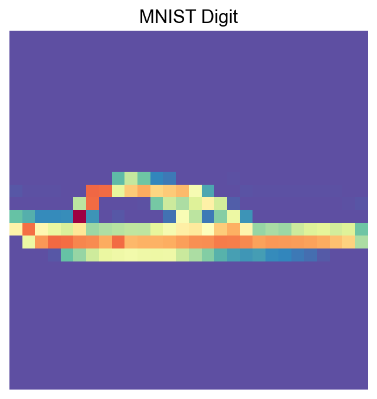
Import PIASO#
[15]:
import piaso
/n/data1/hms/neurobio/fishell/mindai/.conda/envs/nca/lib/python3.10/site-packages/tqdm/auto.py:21: TqdmWarning: IProgress not found. Please update jupyter and ipywidgets. See https://ipywidgets.readthedocs.io/en/stable/user_install.html
from .autonotebook import tqdm as notebook_tqdm
INFOG Normalization#
[16]:
adata.layers['raw']=adata.X.copy()
[17]:
%%time
piaso.tl.infog(adata, layer='raw', n_top_genes=100)
The normalized data is saved as `infog` in `adata.layers`.
The highly variable genes are saved as `highly_variable` in `adata.var`.
Finished INFOG normalization.
CPU times: user 2.06 s, sys: 1.23 s, total: 3.28 s
Wall time: 3.3 s
[18]:
visualize_mnist_image(adata[30].layers['infog'].toarray())
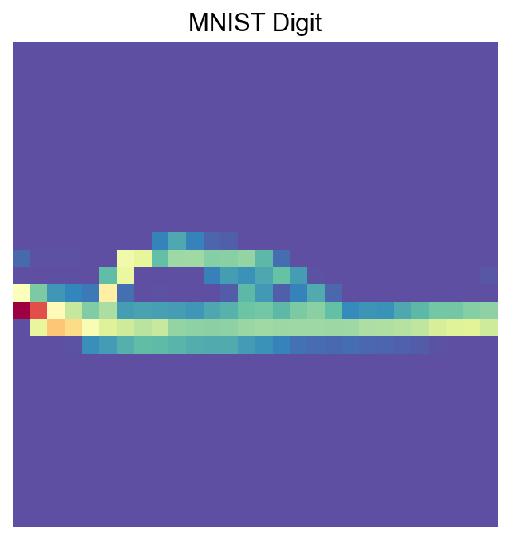
Run GDR for dimensionality reduction#
Setting use_highly_variable=False is needed for this dataset:
[19]:
%%time
piaso.tl.runGDRParallel(
adata,
groupby=None,
resolution=1,
n_gene =100,
mu = 10,
layer='raw', infog_layer='raw',
score_layer='raw',
scoring_method='piaso',
random_seed=1927,
use_highly_variable =False,
n_highly_variable_genes = 200,
n_svd_dims =10,
max_workers = 32,
calculate_score_multiBatch=False,
verbosity=0
)
The cell embeddings calculated by GDR were saved as `X_gdr` in adata.obsm.
CPU times: user 1min 34s, sys: 2.18 s, total: 1min 37s
Wall time: 1min 42s
[20]:
%%time
sc.pp.neighbors(adata,
use_rep='X_gdr',
n_neighbors=15,random_state=10,knn=True,
method="umap")
sc.tl.umap(adata)
computing neighbors
finished: added to `.uns['neighbors']`
`.obsp['distances']`, distances for each pair of neighbors
`.obsp['connectivities']`, weighted adjacency matrix (0:00:08)
computing UMAP
finished: added
'X_umap', UMAP coordinates (adata.obsm)
'umap', UMAP parameters (adata.uns) (0:01:03)
CPU times: user 3min 9s, sys: 396 ms, total: 3min 10s
Wall time: 1min 12s
[21]:
sc.pl.umap(adata,
color=['class'],
# layer='raw',
palette=piaso.pl.color.d_color1,
ncols=3,
# size=10,
frameon=False)
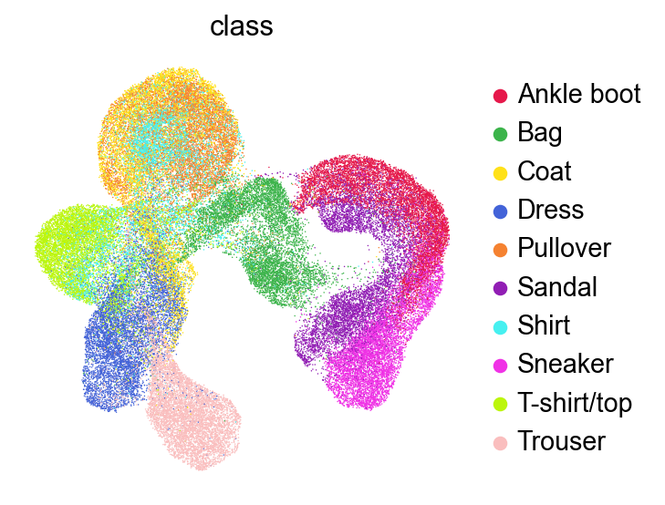
Run Clustering#
[22]:
%%time
sc.tl.leiden(adata,resolution=1,key_added='Leiden')
running Leiden clustering
<timed eval>:1: FutureWarning: In the future, the default backend for leiden will be igraph instead of leidenalg.
To achieve the future defaults please pass: flavor="igraph" and n_iterations=2. directed must also be False to work with igraph's implementation.
finished: found 22 clusters and added
'Leiden', the cluster labels (adata.obs, categorical) (0:00:18)
CPU times: user 18.4 s, sys: 203 ms, total: 18.6 s
Wall time: 18.7 s
[23]:
sc.pl.umap(adata,
color=['Leiden'],
# layer='raw',
palette=piaso.pl.color.d_color3,
ncols=3,
# size=10,
frameon=False)
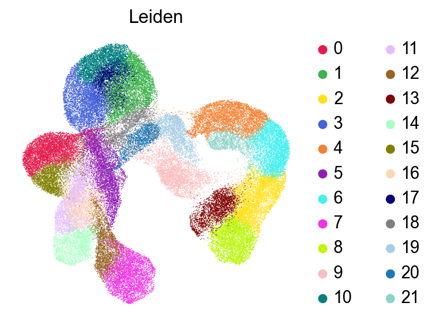
[24]:
sc.pl.umap(adata,
color=['Leiden'],
# layer='raw',
palette=piaso.pl.color.d_color3,
legend_fontsize=10,
legend_fontoutline=2,
legend_loc='on data',
ncols=3,
# size=10,
frameon=False)
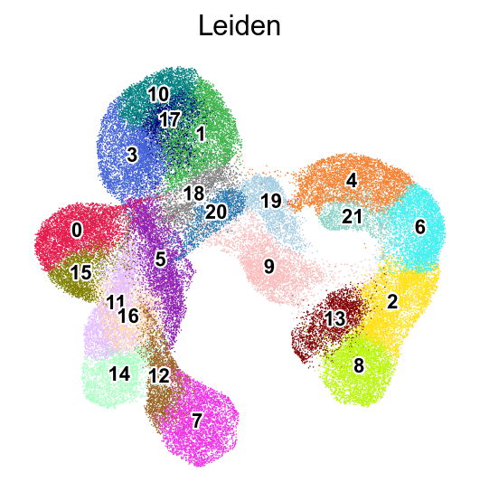
[25]:
def visualize_cluster(X, cluster_labels, cluster_id, num_samples=7):
# Find all samples belonging to the specified cluster
indices = np.where(cluster_labels == cluster_id)[0]
# Select random samples from this cluster (or first few if less than requested)
sample_indices = indices[:min(num_samples, len(indices))]
# Create a figure with subplots
fig, axes = plt.subplots(1, len(sample_indices), figsize=(len(sample_indices)*2, 2))
# Display each sample
for i, idx in enumerate(sample_indices):
ax = axes[i] if len(sample_indices) > 1 else axes
ax.imshow(X[idx].reshape(28, 28), cmap='Spectral_r')
ax.set_title(f'Cluster {cluster_id}')
ax.axis('off')
plt.tight_layout()
plt.show()
[26]:
visualize_cluster(adata.X.todense(),
cluster_labels=adata.obs['Leiden'],
cluster_id='1',
num_samples=7)
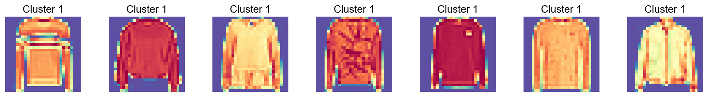
[27]:
visualize_cluster(adata.X.todense(),
cluster_labels=adata.obs['Leiden'],
cluster_id='17',
num_samples=7)
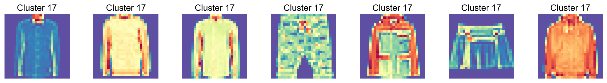
[28]:
visualize_cluster(adata.X.todense(),
cluster_labels=adata.obs['Leiden'],
cluster_id='0',
num_samples=7)
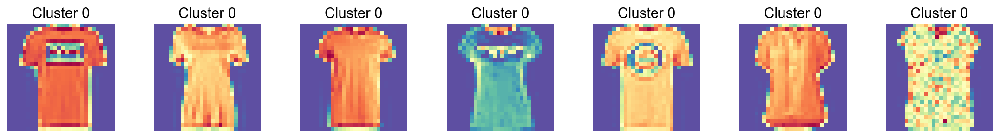
Run COSG to identify features for each cluster#
[29]:
import cosg
[30]:
%%time
n_gene=30
groupby='Leiden'
cosg.cosg(adata,
key_added='cosg',
# use_raw=False, layer='log1p', ## e.g., if you want to use the log1p layer in adata
mu=100,
expressed_pct=0.1,
remove_lowly_expressed=True,
n_genes_user=adata.n_vars,
groupby=groupby)
CPU times: user 1.45 s, sys: 221 ms, total: 1.67 s
Wall time: 1.68 s
[31]:
sc.tl.dendrogram(adata,groupby=groupby,use_rep='X_gdr')
df_tmp=pd.DataFrame(adata.uns['cosg']['names'][:3,]).T
df_tmp=df_tmp.reindex(adata.uns['dendrogram_'+groupby]['categories_ordered'])
marker_genes_list={idx: list(row.values) for idx, row in df_tmp.iterrows()}
marker_genes_list = {k: v for k, v in marker_genes_list.items() if not any(isinstance(x, float) for x in v)}
sc.pl.dotplot(adata, marker_genes_list,
groupby=groupby,
# layer='log1p',
dendrogram=True,
swap_axes=False,
standard_scale='var',
cmap='Spectral_r')
Storing dendrogram info using `.uns['dendrogram_Leiden']`
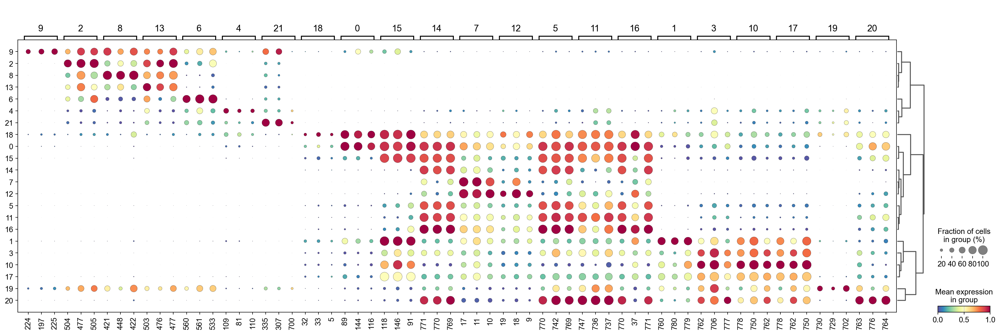
[32]:
marker_gene=pd.DataFrame(adata.uns['cosg']['names'])
[33]:
cluster_check='12'
marker_gene[cluster_check].values[:30]
[33]:
array(['19', '18', '9', '10', '17', '11', '46', '773', '38', '12', '16',
'13', '774', '14', '15', '767', '766', '45', '39', '37', '233',
'261', '205', '289', '74', '177', '745', '66', '317', '149'],
dtype=object)
[34]:
sc.pl.embedding(adata,
basis='X_umap',
color=marker_gene[cluster_check].values[:12],
# layer='log1p',
palette=piaso.pl.color.d_color4,
legend_fontoutline=2,
legend_fontsize=7,
legend_fontweight=5,
# legend_loc='on data',
cmap=piaso.pl.color.c_color1,
ncols=6,
# size=10,
frameon=False)
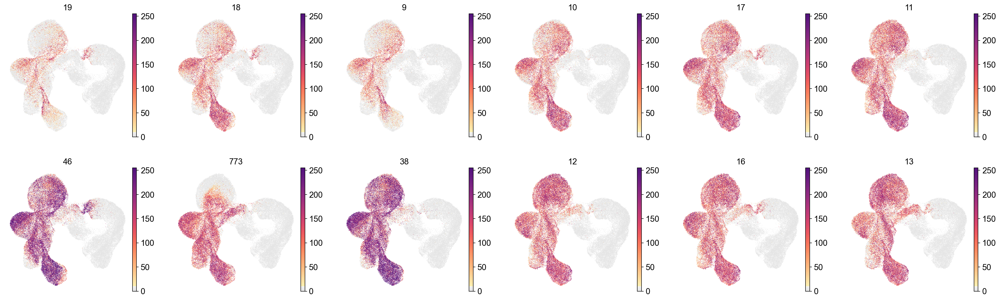
[35]:
cosg_scores=cosg.indexByGene(
adata.uns['cosg']['COSG'],
# gene_key="names", score_key="scores",
set_nan_to_zero=True,
convert_negative_one_to_zero=True
)
[36]:
cosg_scores=cosg_scores.loc[adata.var_names]
[37]:
cosg_scores=cosg.iqrLogNormalize(cosg_scores)
[38]:
cosg_scores
[38]:
| 0 | 1 | 2 | 3 | 4 | 5 | 6 | 7 | 8 | 9 | ... | 12 | 13 | 14 | 15 | 16 | 17 | 18 | 19 | 20 | 21 | |
|---|---|---|---|---|---|---|---|---|---|---|---|---|---|---|---|---|---|---|---|---|---|
| 0 | 0.000000 | 0.000000 | 0.0 | 0.000000 | 0.000000 | 0.0 | 0.0 | 0.0 | 0.0 | 0.0 | ... | 0.0 | 0.0 | 0.0 | 0.000000 | 0.0 | 0.000000 | 0.000000 | 0.000000 | 0.000000 | 0.00000 |
| 1 | 0.000000 | 0.000000 | 0.0 | 0.000000 | 0.000000 | 0.0 | 0.0 | 0.0 | 0.0 | 0.0 | ... | 0.0 | 0.0 | 0.0 | 0.000000 | 0.0 | 0.000000 | 0.000000 | 0.000000 | 0.000000 | 0.00000 |
| 2 | 0.000000 | 0.000000 | 0.0 | 0.000000 | 0.000000 | 0.0 | 0.0 | 0.0 | 0.0 | 0.0 | ... | 0.0 | 0.0 | 0.0 | 0.000000 | 0.0 | 0.000000 | 0.922156 | 0.000000 | 0.000000 | 0.00000 |
| 3 | 0.126049 | 0.000000 | 0.0 | 0.000000 | 0.000000 | 0.0 | 0.0 | 0.0 | 0.0 | 0.0 | ... | 0.0 | 0.0 | 0.0 | 0.000000 | 0.0 | 0.000000 | 1.122768 | 0.000000 | 0.000000 | 0.00000 |
| 4 | 0.040497 | 0.000000 | 0.0 | 0.000000 | 0.000000 | 0.0 | 0.0 | 0.0 | 0.0 | 0.0 | ... | 0.0 | 0.0 | 0.0 | 0.000000 | 0.0 | 0.000000 | 1.905220 | 0.000000 | 0.000000 | 0.00000 |
| ... | ... | ... | ... | ... | ... | ... | ... | ... | ... | ... | ... | ... | ... | ... | ... | ... | ... | ... | ... | ... | ... |
| 779 | 0.000010 | 2.081644 | 0.0 | 0.557788 | 0.003543 | 0.0 | 0.0 | 0.0 | 0.0 | 0.0 | ... | 0.0 | 0.0 | 0.0 | 0.000003 | 0.0 | 0.867113 | 0.034861 | 0.021561 | 0.114554 | 0.00000 |
| 780 | 0.000003 | 2.454238 | 0.0 | 0.049116 | 0.017677 | 0.0 | 0.0 | 0.0 | 0.0 | 0.0 | ... | 0.0 | 0.0 | 0.0 | 0.000000 | 0.0 | 0.431328 | 0.298676 | 0.080659 | 0.017303 | 0.00000 |
| 781 | 0.000000 | 0.367824 | 0.0 | 0.000000 | 0.134834 | 0.0 | 0.0 | 0.0 | 0.0 | 0.0 | ... | 0.0 | 0.0 | 0.0 | 0.000000 | 0.0 | 0.000000 | 0.911768 | 0.361801 | 0.000000 | 0.52998 |
| 782 | 0.000000 | 0.000000 | 0.0 | 0.000000 | 0.000000 | 0.0 | 0.0 | 0.0 | 0.0 | 0.0 | ... | 0.0 | 0.0 | 0.0 | 0.000000 | 0.0 | 0.000000 | 0.286133 | 0.640235 | 0.000000 | 0.00000 |
| 783 | 0.000000 | 0.000000 | 0.0 | 0.000000 | 0.000000 | 0.0 | 0.0 | 0.0 | 0.0 | 0.0 | ... | 0.0 | 0.0 | 0.0 | 0.000000 | 0.0 | 0.000000 | 0.000000 | 0.000000 | 0.000000 | 0.00000 |
784 rows × 22 columns
[39]:
visualize_mnist_image(cosg_scores['0'].values)
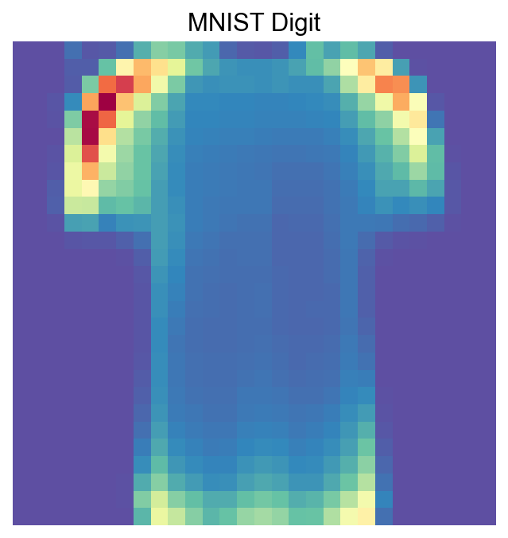
[40]:
visualize_mnist_image(cosg_scores['1'].values)
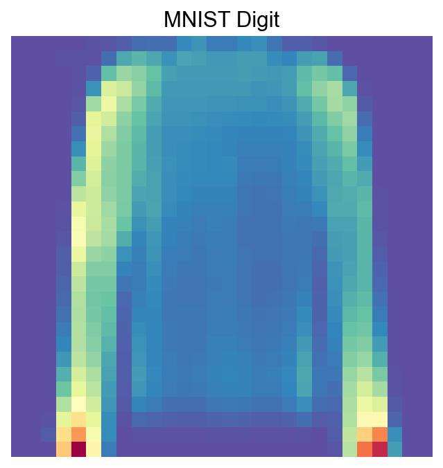
[41]:
visualize_mnist_image(cosg_scores['2'].values)
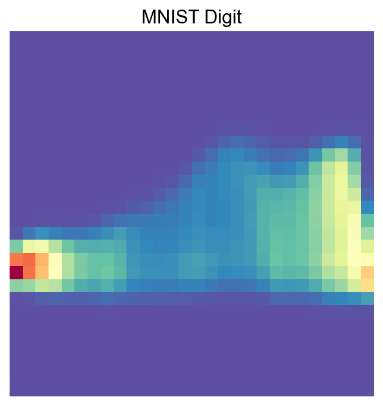
[42]:
import matplotlib.pyplot as plt
import numpy as np
import math
def visualize_mnist_dataframe(df, images_per_row=6):
"""
Plots MNIST images from a dataframe where columns are images and rows are pixels.
Parameters:
- df: pandas DataFrame where each column is an image (784 pixels).
- images_per_row: int, number of images to display per row (default 8).
"""
num_images = df.shape[1]
# Calculate how many rows we need in the plot grid
num_rows = math.ceil(num_images / images_per_row)
# Create the figure with a dynamic size based on the grid
# We multiply by 2 to give each image roughly 2x2 inches of space
plt.figure(figsize=(2 * images_per_row, 2 * num_rows))
for i in range(num_images):
# Select the i-th column, convert to numpy array, and reshape
# iloc is used to access columns by position regardless of column names
image_data = df.iloc[:, i].values
image = image_data.reshape(28, 28)
# Create subplot indices start at 1
plt.subplot(num_rows, images_per_row, i + 1)
plt.imshow(image, cmap='Spectral_r')
plt.axis('off')
# Optional: Add column name as title for reference
plt.title(f'COSG Cluster Features: {df.columns[i]}', fontsize=9)
plt.tight_layout()
plt.show()
[43]:
visualize_mnist_dataframe(cosg_scores)
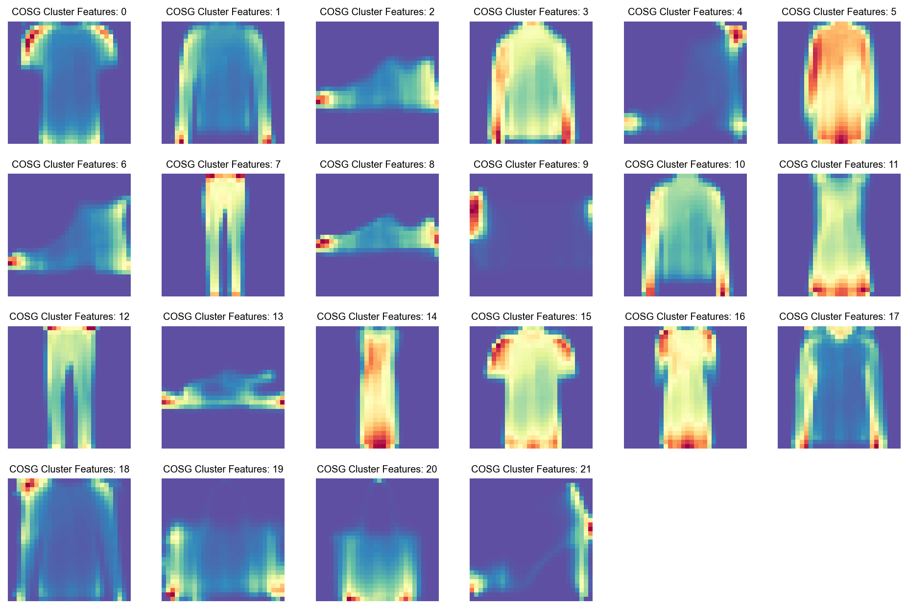
Run COSG to identify features for each Class#
[44]:
import cosg
[45]:
%%time
n_gene=30
groupby='class'
cosg.cosg(adata,
key_added='cosg',
# use_raw=False, layer='log1p', ## e.g., if you want to use the log1p layer in adata
mu=100,
expressed_pct=0.1,
remove_lowly_expressed=True,
n_genes_user=adata.n_vars,
groupby=groupby)
CPU times: user 1.42 s, sys: 226 ms, total: 1.65 s
Wall time: 1.65 s
[46]:
sc.tl.dendrogram(adata,groupby=groupby,use_rep='X_gdr')
df_tmp=pd.DataFrame(adata.uns['cosg']['names'][:3,]).T
df_tmp=df_tmp.reindex(adata.uns['dendrogram_'+groupby]['categories_ordered'])
marker_genes_list={idx: list(row.values) for idx, row in df_tmp.iterrows()}
marker_genes_list = {k: v for k, v in marker_genes_list.items() if not any(isinstance(x, float) for x in v)}
sc.pl.dotplot(adata, marker_genes_list,
groupby=groupby,
# layer='log1p',
dendrogram=True,
swap_axes=False,
standard_scale='var',
cmap='Spectral_r')
Storing dendrogram info using `.uns['dendrogram_class']`
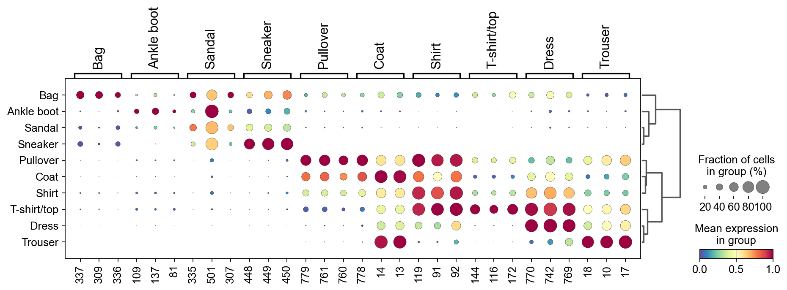
[47]:
marker_gene=pd.DataFrame(adata.uns['cosg']['names'])
[48]:
cluster_check='Bag'
marker_gene[cluster_check].values[:30]
[48]:
array(['337', '309', '336', '364', '308', '365', '281', '280', '252',
'253', '224', '225', '197', '338', '196', '169', '366', '168',
'310', '141', '282', '392', '198', '170', '254', '226', '339',
'367', '142', '311'], dtype=object)
[49]:
sc.pl.embedding(adata,
basis='X_umap',
color=marker_gene[cluster_check].values[:12],
# layer='log1p',
palette=piaso.pl.color.d_color4,
legend_fontoutline=2,
legend_fontsize=7,
legend_fontweight=5,
# legend_loc='on data',
cmap=piaso.pl.color.c_color1,
ncols=6,
# size=10,
frameon=False)
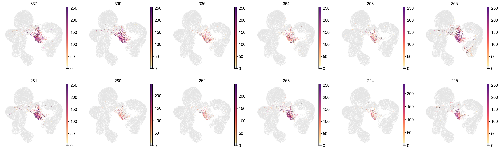
[50]:
cosg_scores=cosg.indexByGene(
adata.uns['cosg']['COSG'],
# gene_key="names", score_key="scores",
set_nan_to_zero=True,
convert_negative_one_to_zero=True
)
[51]:
cosg_scores=cosg_scores.loc[adata.var_names]
[52]:
cosg_scores=cosg.iqrLogNormalize(cosg_scores)
[53]:
cosg_scores
[53]:
| Ankle boot | Bag | Coat | Dress | Pullover | Sandal | Shirt | Sneaker | T-shirt/top | Trouser | |
|---|---|---|---|---|---|---|---|---|---|---|
| 0 | 0.0 | 0.000000 | 0.000000 | 0.0 | 0.000000 | 0.0 | 0.000000 | 0.0 | 0.000000 | 0.0 |
| 1 | 0.0 | 0.000000 | 0.000000 | 0.0 | 0.000000 | 0.0 | 0.000000 | 0.0 | 0.000000 | 0.0 |
| 2 | 0.0 | 0.000000 | 0.000000 | 0.0 | 0.000000 | 0.0 | 0.000000 | 0.0 | 0.000000 | 0.0 |
| 3 | 0.0 | 0.000000 | 0.000000 | 0.0 | 0.000000 | 0.0 | 0.000000 | 0.0 | 0.142387 | 0.0 |
| 4 | 0.0 | 0.000000 | 0.000000 | 0.0 | 0.000000 | 0.0 | 0.000000 | 0.0 | 0.035906 | 0.0 |
| ... | ... | ... | ... | ... | ... | ... | ... | ... | ... | ... |
| 779 | 0.0 | 0.004029 | 1.342603 | 0.0 | 1.726759 | 0.0 | 0.342494 | 0.0 | 0.000031 | 0.0 |
| 780 | 0.0 | 0.005588 | 0.807287 | 0.0 | 1.535818 | 0.0 | 0.297864 | 0.0 | 0.000018 | 0.0 |
| 781 | 0.0 | 0.000000 | 0.000000 | 0.0 | 0.564507 | 0.0 | 0.000000 | 0.0 | 0.000000 | 0.0 |
| 782 | 0.0 | 0.000000 | 0.000000 | 0.0 | 0.000000 | 0.0 | 0.000000 | 0.0 | 0.000000 | 0.0 |
| 783 | 0.0 | 0.000000 | 0.000000 | 0.0 | 0.000000 | 0.0 | 0.000000 | 0.0 | 0.000000 | 0.0 |
784 rows × 10 columns
[54]:
visualize_mnist_image(cosg_scores['T-shirt/top'].values)
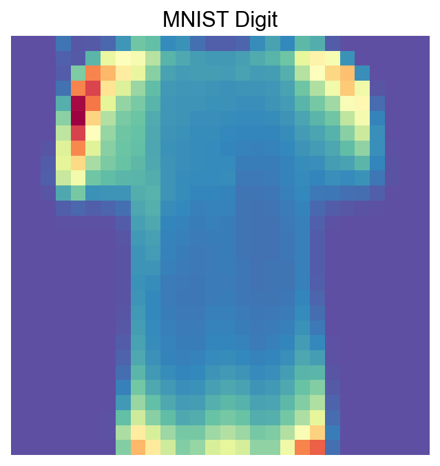
[55]:
visualize_mnist_image(cosg_scores['Ankle boot'].values)
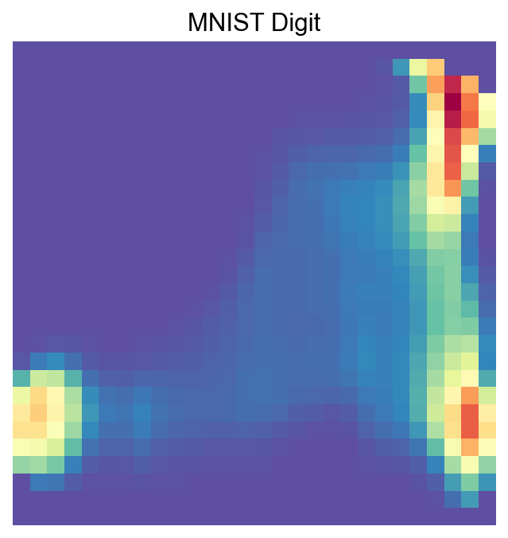
[56]:
visualize_mnist_image(cosg_scores['Dress'].values)
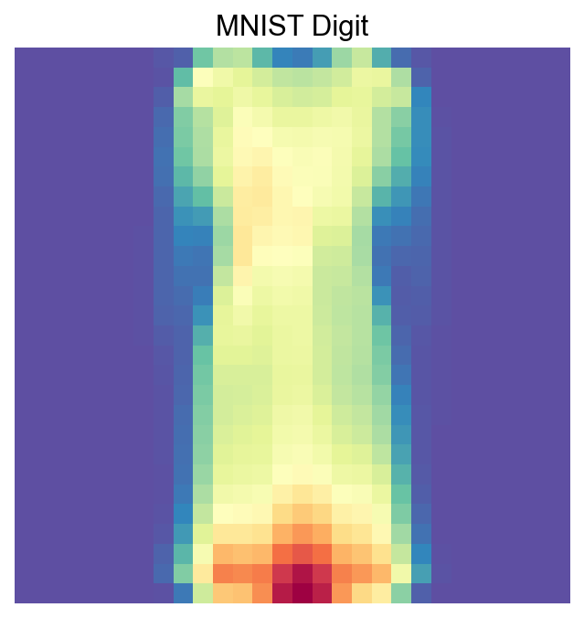
[57]:
import matplotlib.pyplot as plt
import numpy as np
import math
def visualize_mnist_dataframe(df, images_per_row=6):
"""
Plots MNIST images from a dataframe where columns are images and rows are pixels.
Parameters:
- df: pandas DataFrame where each column is an image (784 pixels).
- images_per_row: int, number of images to display per row (default 8).
"""
num_images = df.shape[1]
# Calculate how many rows we need in the plot grid
num_rows = math.ceil(num_images / images_per_row)
# Create the figure with a dynamic size based on the grid
# We multiply by 2 to give each image roughly 2x2 inches of space
plt.figure(figsize=(2 * images_per_row, 2 * num_rows))
for i in range(num_images):
# Select the i-th column, convert to numpy array, and reshape
# iloc is used to access columns by position regardless of column names
image_data = df.iloc[:, i].values
image = image_data.reshape(28, 28)
# Create subplot indices start at 1
plt.subplot(num_rows, images_per_row, i + 1)
plt.imshow(image, cmap='Spectral_r')
plt.axis('off')
# Optional: Add column name as title for reference
plt.title(f'COSG Cluster Features: {df.columns[i]}', fontsize=9)
plt.tight_layout()
plt.show()
[58]:
visualize_mnist_dataframe(cosg_scores)
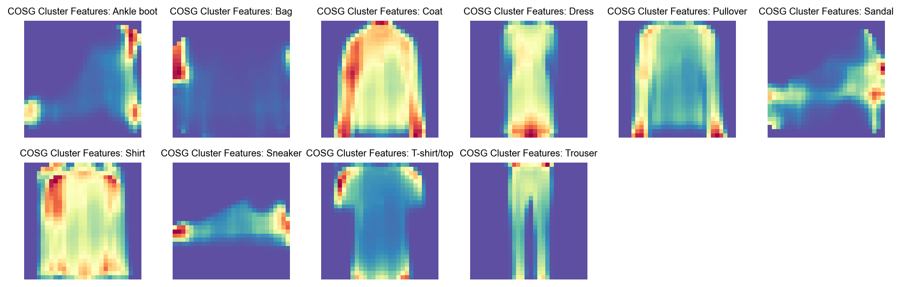